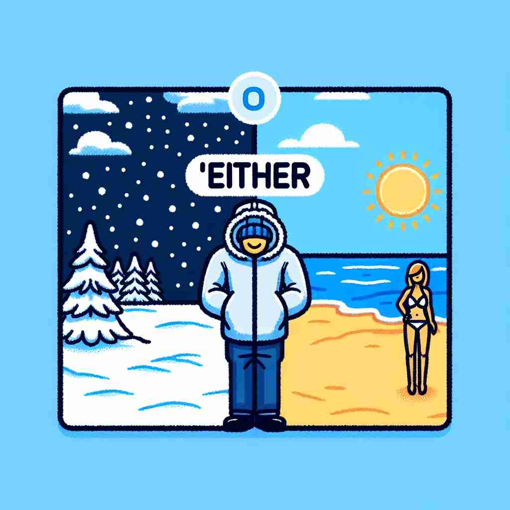

💬 You can choose either red or blue shirt.

💬 You can have either coffee or tea.
💬 You can choose either option to go through the door.

💬 You can go to either place: the snowy mountain or the sunny beach.
🔈 ['aɪðə]['iː-]
🗝️ det./pron./adv. one or the other of two
🖼️ 在一家冰淇淋店里，一个小女孩站在柜台前。柜台上摆着巧克力和草莓两种口味的冰淇淋。店员微笑着问她：'你想要哪一种，巧克力还是草莓？'女孩犹豫了一下，最终决定：'I’ll take either!' 这个场景展示了'either'用于表示两者之一的含义。
🔍 想象'either'是一个指向两个选项的箭头。这个箭头可以指向其中一个（核心含义），也可以同时指向两个（衍生含义）。在否定句中，这个箭头则表示两个选项都不选。通过这个'选择箭头'的图像，你可以更容易理解和记忆'either'的各种用法。
💬 You can choose either red or blue shirt.
💬 You can have either coffee or tea.
💬 You can choose either option to go through the door.
💬 You can go to either place: the snowy mountain or the sunny beach.
🌳 "either" 是一个由 Old English 的 "ǣgðer" 演变而来的词。它的基本结构没有明显的词根词缀拆分，但包含了一种选择或可能性的含义，常用于表示二者中的任何一个。
💡 记忆 "either" 时，可以联想为 "every other"（两个中任一个）。这种联想可以帮助记住它表示选择的含义。
🗝️ adj. one and the other; both
🖼️ 在一个公园里，两棵大树下阴凉的长椅子上坐着一对老夫妇。两人都在看报纸，安静而祥和。旁边走过的一位朋友看到他们，说：'I see you’re enjoying the morning in the shade of either tree.' 这个场景展示了'either'用于表示两者皆是的含义。
💬 There are trees on either side of the road.
❓ 从"两者之一"扩展到"两者都
🗝️ conj. used before the first of two (or occasionally more) alternatives
🖼️ 在一个家庭晚餐桌上，妈妈问孩子们：'Either we can watch a movie tonight or go out for ice cream.' 孩子们兴奋地开始讨论这两种有趣的选择。这个场景展示了'either'用于列出两个（或偶尔更多）选择中的第一个的含义。
💬 The shirt comes in either red or blue.
❓ 用于引导两个选择中的第一个
🗝️ adv. used in negative sentences to emphasize that something is not true of anything or anyone
🖼️ 在一个安静的教室里，老师宣布考试成绩。有学生问：'有人得了100分吗？' 老师摇头回答：'No, nobody got a full score, and that isn't surprising either.' 这个场景展示了'either'强调否定意义的用法。
💬 I don't like either of these paintings.
❓ 在否定句中强调两者都不
🗝️ adv. similarly; likewise (used to indicate agreement with a negative statement)
🖼️ 在一个咖啡店里，两位朋友在讨论健身计划。一个朋友说：'I haven’t been to the gym recently.' 另一个朋友点头应和：'I haven’t either.' 这个场景展示了'either'用于表示同意否定陈述的含义。
💬 I can't stand spicy food. - Me neither.
❓ 表示对否定陈述的认同